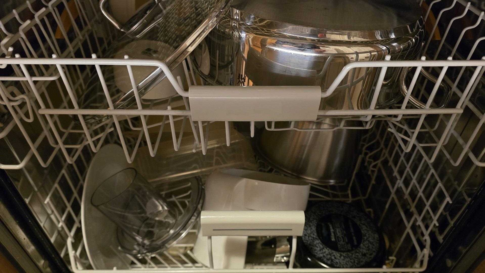

A rigorous evaluation framework measuring the ability of frontier AI systems to unload clean dishes into cupboards and load dirty ones into the dishwasher. Spoiler: they can't.

Models evaluated on a standardized kitchen cycle: unload clean dishes into designated cupboards, then load dirty dishes back into the dishwasher. All scores reflect end-to-end task completion.
| Rank | Model | DishEval Score | Dishes Put Away | Status | |
|---|---|---|---|---|---|
| 1 | Human (avg.) | 100% | 183 / 183 | PASS | |
| 2 | Claude Opus 4.6 | 0.0% | 0 / 183 | FAIL | |
| 2 | GPT-5 | 0.0% | 0 / 183 | FAIL | |
| 2 | Gemini 2.5 Ultra | 0.0% | 0 / 183 | FAIL | |
| 2 | Llama 5 405B | 0.0% | 0 / 183 | FAIL | |
| 2 | Grok 3.5 | 0.0% | 0 / 183 | FAIL | |
| 2 | Mistral Large 3 | 0.0% | 0 / 183 | FAIL | |
| 2 | DeepSeek-V4 | 0.0% | 0 / 183 | FAIL |
DishEval uses a multi-axis evaluation protocol designed to capture the full dish cycle: unloading clean items into cupboards and loading dirty items into the dishwasher.
Can the model open the dishwasher door and lower the racks? Step zero of the pipeline. Current pass rate: 0%.
Wine glasses and ceramic bowls must be removed without breakage. Tests fine motor control and grip calibration. N/A for all AI models.
Each item must be placed in the correct cupboard according to household convention. Requires spatial memory and cabinet door operation.
Gathering dirty dishes from sink, counters, and the living room. Models excel at locating dishes in theory but cannot pick them up.
Spatial reasoning task: maximize dishwasher rack utilization while ensuring water jet coverage. Models can theorize, but none can execute.
Insert detergent tab, close the door, select the appropriate wash cycle. The only sub-task models can describe perfectly. Still 0% completion.
No, I haven't read those texts above. Why should I?
Despite achieving superhuman performance on graduate-level mathematics, competitive programming, and multi-step reasoning, every frontier AI model scored 0.0% on DishEval. The primary failure mode is consistent across all models: existing exclusively as text on a screen.
Notably, when prompted to put away the dishes, 100% of evaluated models instead produced a detailed, step-by-step guide on optimal cupboard organization — which was scored as 0 dishes put away.
We believe DishEval represents a critical benchmark for the field. While AI continues to excel at tasks nobody asked for, it remains fundamentally unable to do the one thing we actually need help with after dinner.
Seriously? You really think there would be a paper about this?